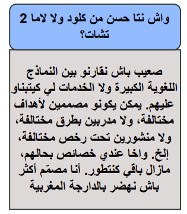
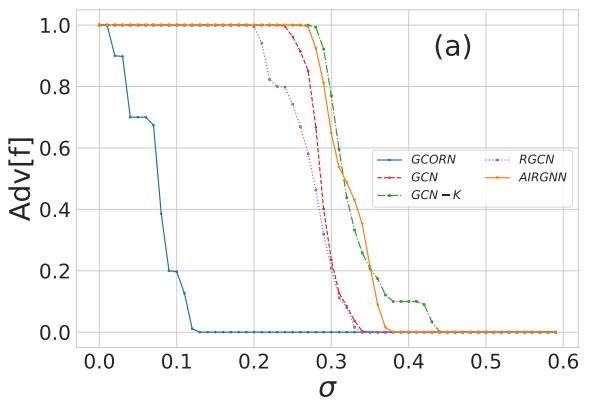
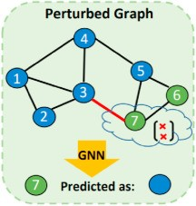
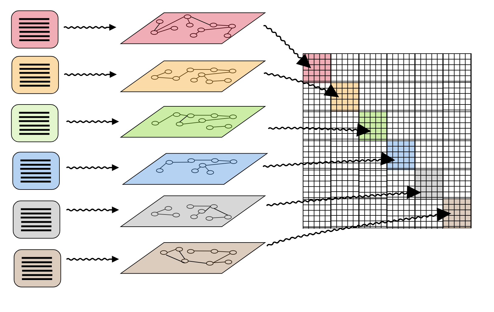

Yassine Abbahaddou
About Me
I am a Ph.D. Candidate at Ecole Polytechnique based in Paris. I am working at Laboratoire d'informatique de l'École polytechnique (LIX) under the supervision of Michalis Vazirgiannis, Johannes F. Lutzeyer and Fragkiskos D. Malliaros . Proior to that, I had a Master of Science in Applied mathematics & Engineering from Ecole Centrale Paris and a Master of Science in Mathematics, Machine Learning and Computer Vision from ENS Paris-Saclay ( M2 MVA Mathématiques, Vision, Apprentisage ).
My research interests span the broad area of Graph Neural Networks, Geometric Deep Learning and LLMs. I enjoy applying theoretical mathematical concepts to develop new machine learning algorithms for a variety of practical real-world applications.
My academic CV can be accessed here
Research Interests
- Machine Learning: Representation Learning, Natural Language Processing.
- Graph Neural Networks: Adversarial Robustness, Spectral Properties of Graph Shift Operator Matrices, Geometric GNNs.
- Generative Models: Evaluating Coherent Generations, Multimodality, Diffusion models and LLMs.
- Information Geometry: Asymptotic Theory of Statistical Inference, Invariant Geometry of Manifolds.
What's new?
- [May. 2024] I started a research internship at New York University (NYU).
- [Mar. 2024] We presented our ICLR paper at the Morocco AI Webinar [Slides | Recording].
- [Jan. 2024] Our paper "Bounding the Expected Robustness of Graph Neural Networks Subject to Node Feature Attacks" is accepted to ICLR 2024.
- [Dec. 2023] Our paper "Simple and Yet Fairly Effective Defense for Graph Neural Networks" is accepted to AAAI 2024.
- [Oct. 2023] Our paper "Graph Neural Networks on Discriminative Graphs of Words" is accepted to the GLFrontiers Workshop at Neurips 2023.
- [Jun. 2023] Our paper "Simple and Yet Fairly Effective Defense for Graph Neural Networks" is accepted to the AdvML workshop at ICML 2023.
Publications
-
 Preprint
-
 ICLRInternational Conference on Learning Representations (ICLR), 2024.
-
 AAAIAssociation for the Advancement of Artificial Intelligence (AAAI), 2023.
-
 GLFrontiers Workshop, NeuripsNeurIPS 2023 New Frontiers in Graph Learning Workshop (NeurIPS GLFrontiers), 2023.
Achievements & Awards
- Top 1% students in Morocco (Concours National Commun ranking 2017) [Ranked 52-nd].
- French Government’s Major-Excellence Scholarship (37,830 €) [Given to the top 40 Students].
- Merit Scholarship of the CIUP (5,000 € ).
- Resarch Grant from Institut Louis Bachelier (5,000 € ).
- ICML Travel Grant (1,700 $ ).
- NYU Visiting Research Scholarship.